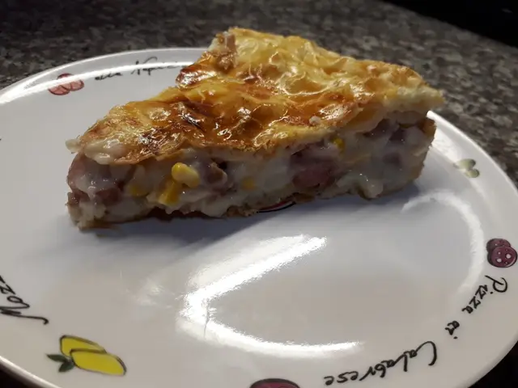

Tarta de Panchos con Verduras

Ingredientes:
4 panchos
1 cebolla
1/2 morrón
1/2 lata de choclo o un choclo hervido
3 huevos
Sal y pimienta
2 tapas de hojaldre
Preparación:
En un sartén, freír la cebolla y el morrón, cuando estén dorados agregar el choclo y los panchos previamente picados en rodajas.
Agregar sal y pimienta a gusto.
Forrar el molde de una tartera con una tapa de hojaldre y colcar el relleno.
Aparte, batir los huevos y agregarlos sobre el relleno.
Tapar con la masa que quedó y llevar al horno a 180° por 15 minutos, o hasta que esté dorada.